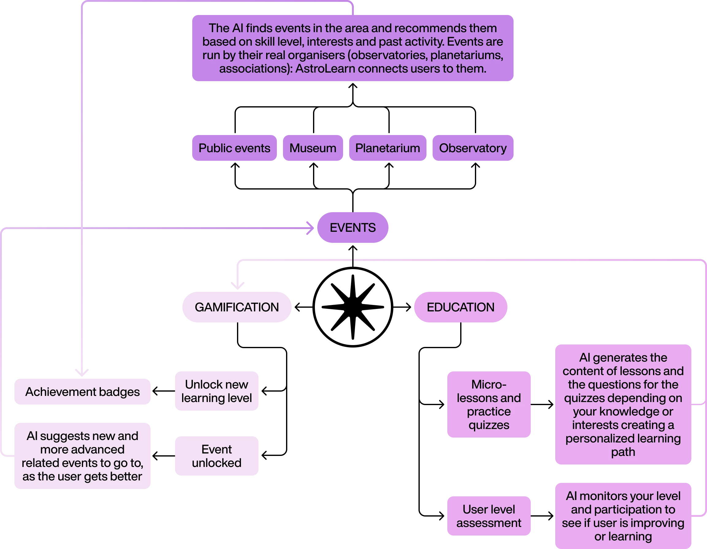
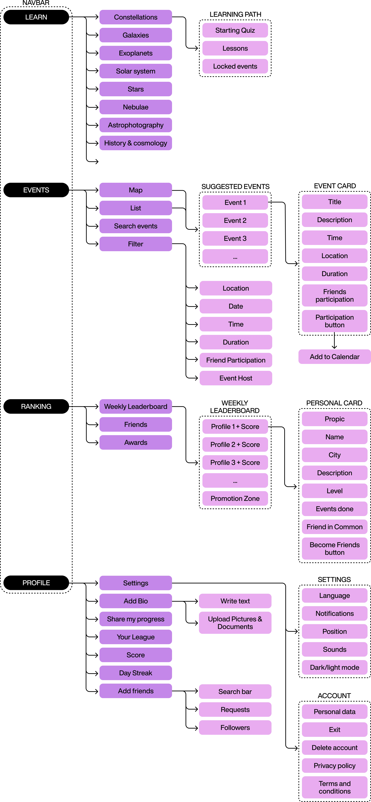
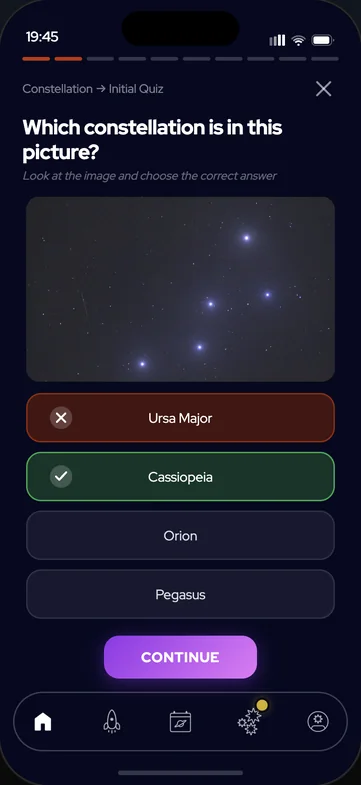
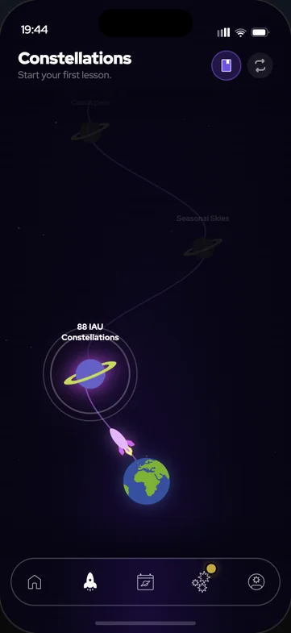
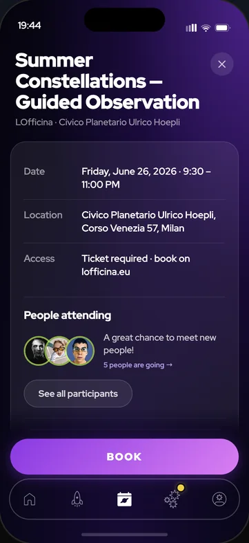

[1] Introduction
AstroLearn arises from a paradox: at amateur astronomy events, people are physically in the same place but barely talk to each other. The passion is there, the connection is not. It is a mobile app designed for young amateur astronomers just starting out (18-30 years old), which transforms a hobby perceived as technical and intimidating into a structured and accessible journey.
AstroLearn was developed by a team of 5 people for the Envisioning AI Through Design course. My contribution focused on designing the AI system architecture (from the logic of event extraction and classification to the matching system between user and content) and creating the prototype.
[2] Research
Mixed methods: 7 in-depth interviews (including the president of the Cernusco Amateur Astronomers Association), a questionnaire with 38 respondents, field observations at L'Officina Planetaria and the Cernusco sul Naviglio observatory, and a benchmark of astronomy apps and gamified micro-learning platforms (Duolingo, Habitica, Brilliant). 85.7% of interviewees said they did not feel part of any community, despite wanting to meet other enthusiasts: the initial paradox was confirmed by data, not just intuition. Site visits showed well-equipped venues that looked "abandoned" to outsiders, and others with no narrative for newcomers.
Five critical issues emerged:
– High curiosity but low trust among young people.
– Technical entry barriers.
– Fragmented, seasonal participation.
– Different priorities between young and veteran members.
– Generational dependency that makes communities fragile.
[3] Design opportunities
The initial brief asked to help local associations survive and grow. The research led to a more precise reformulation: users struggle to approach and stay engaged in amateur astronomy because the required commitment level makes gradual entry difficult.
[4] Ecosystem structure
The service rests on two pillars: a gamified micro-learning engine and a real event discovery system. These are organised into three interrelated domains (education, gamification, events) where learning unlocks physical participation, and physical participation refines subsequent learning.

[5] AI core
The AI works in the background. It extracts events from unstructured public sources (observatory websites, planetariums, social pages), classifies them by topic and required level, and compares them with the user's competence profile. An event is unlocked only when the user demonstrates, through quizzes, that they possess the necessary basics.
This choice stems from a specific need revealed in research: sceptical users associate AI with a loss of scientific rigour, older users distrust it outright. Staying invisible builds trust without having to declare it.

[6] Prompt engineering example
The system generates personalised learning paths through structured prompts: user level, topic of interest, output in progressive modules from beginner to advanced. A second prompt links studied content to ongoing real events, verifying their public existence before suggesting them.
Input prompt (excerpt)
You are the AI engine of AstroLearn, an astronomy learning app. CONTEXT: today's date, user city (~50 km radius), current and next module (level + topics), events already suggested. TASK: search the web for real, upcoming public astronomy events near the user (observatories, planetariums, associations, science museums), relevant to the current or next module and never beyond the user's level. RULES - Only events verifiable from a genuine public source; prefer official sites over aggregators. - Date strictly after today; for recurring events, only the nearest occurrence. - Never repeat an event already suggested. - Aim for 5–7 events; fewer is fine, never pad with weak matches. - If date, time, address or source can't be verified, drop the event. - If nothing relevant exists, return an empty array; never invent one. OUTPUT: valid JSON only, no preamble (schema shown on the right).
Output JSON
{
"events_found": true,
"events": [
{
"name": "Guided Sky Observation — Identifying the Constellations",
"date_iso": "2026-06-20",
"start_time": "21:30",
"end_time": "22:30",
"timezone": "Europe/Rome",
"venue_name": "Civico Planetario Ulrico Hoepli",
"address": "Corso Venezia 57, Milan",
"topic_match_reason": "The show guides the audience through identifying the main constellations visible to the naked eye — exactly the content of Module 5, with no advanced knowledge required.",
"source_url": "https://lofficina.eu/event-category/osservazioni-guidate/",
"insert_after_module": 5
}
],
"fallback_message": ""
}[7] Information architecture
Four main sections: Learn, Events, Ranking, Profile. Learn guides the learning path and links lessons to unlockable events. Events manages search, map/list, and participation. Ranking shows personal progress and comparison with other users. Profile collects data, statistics, and settings.

[8] Behavioral principles
Three behavioural principles guide the system. Feedback loop: the AI monitors time spent and errors, intervening by lowering content complexity in case of cognitive overload. Recognition: badges and leaderboards mark progress and unlock the next level. Social proof: at the end of an event, the user receives an invitation to leave a review and involve other users in the community.
[9] Lo-fi + mid-fi with user insight
Guerrilla testing on 5 users, 3 key tasks (topic choice and quiz, lesson with error correction, discovery and saving of an event). All tasks were completed, but the test revealed a recurring pattern: visual feedback was insufficient on every screen, unclear states, missing confirmations, elements not recognisable as interactive.
The hi-fi version introduces a consistent feedback system throughout the app: active states, confirmation icons, visual distinction between optional and mandatory content.

[10] Prototype
You can check the working prototype of the application via this link.
[1] Introduction
Paradox: at amateur astronomy events people share the space, not the conversation. Passion yes, connection no.
→ Mobile app for young beginners (18–30): technical, intimidating hobby → structured, accessible journey.
Team of 5 · Envisioning AI Through Design. My role: AI system architecture (event extraction, classification, user–content matching) + prototype.
[2] Research
7 in-depth interviews (incl. president of Cernusco Amateur Astronomers Association) · 38-respondent survey · field observation (L'Officina Planetaria, Cernusco observatory) · benchmark (Duolingo, Habitica, Brilliant).
85.7% don't feel part of any community, yet want to meet others → paradox confirmed by data, not intuition. Venues well equipped but "abandoned" to outsiders, no narrative for newcomers.
5 critical issues:
– High curiosity, low trust (young people).
– Technical entry barriers.
– Fragmented, seasonal participation.
– Young vs veteran priorities.
– Generational dependency → fragile communities.
[3] Design opportunities
Brief: help local associations survive and grow. Research reframed it → commitment required is too high, no gradual entry: users can't approach the hobby or stay engaged.
[4] Ecosystem structure
Two pillars: gamified micro-learning + real event discovery. Three linked domains (education, gamification, events): learning unlocks physical participation → participation refines learning.
AI generates lessons and quizzes on your level, tracks progress, recommends real events. Events run by real organisers (observatories, planetariums, associations): AstroLearn connects, doesn't organise.
[5] AI core
AI works in the background: scrapes events from unstructured public sources (observatory sites, planetariums, social pages) → classifies by topic and level → matches with user's competence profile. Event unlocks only when quizzes prove the basics.
Why invisible: research showed sceptics link AI to loss of scientific rigour, older users distrust it outright → staying invisible builds trust without declaring it.
[6] Prompt engineering example
Structured prompts → personalised path: user level + topic → progressive modules, beginner → advanced. Second prompt links studied content to real upcoming events, verifying they publicly exist before suggesting them: no verifiable source → no event, never invented.
[7] Information architecture
Four sections: Learn (path + unlockable events) · Events (search, map/list, participation) · Ranking (progress vs others) · Profile (data, stats, settings).
[8] Behavioral principles
Three principles. Feedback loop → AI tracks time and errors, lowers complexity on cognitive overload. Recognition → badges + leaderboards mark progress, unlock next level. Social proof → after an event, invite to review and bring others into the community.
[9] User test → hi-fi
Guerrilla test · 5 users · 3 tasks (topic + quiz, lesson with error correction, find + save event). All completed, but recurring pattern: weak visual feedback on every screen → unclear states, missing confirmations, interactive elements not recognisable.
Hi-fi → consistent feedback system: active states, confirmation icons, optional vs mandatory content distinguished.




[10] Prototype
You can check the working prototype of the application via this link.